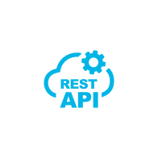

About
- Over 5 years of working experience in designing, developing, and delivering high-quality software solutions.
- Expertise in building scalable, distributed, and fault-tolerant systems using cloud technologies.
- Strong analytical and problem-solving skills, with the ability to develop creative solutions to complex technical challenges.
- Excellent communication, collaboration, and interpersonal skills, with the ability to work effectively in a team-oriented environment.

Senior Software Engineer
- Birthday: 24.03.1997
- Phone: +48 697 364 506
- City: Rzeszów, Poland
- Degree: Master
- Email: artur.pilch12@gmail.com
Services
Backend Development
I offer assistance in building backend services, RESTful/GraphQL APIs, and real-time applications.
Frontend Development
Using modern frontend technologies, I can assist you with both web design and web development.
Monitoring/Observability
I can assist you in establishing monitoring and observability for your product.
Software Architecture
I can offer expertise in designing software architecture for distributed systems.
Skills
Languages
Frameworks
Communication
- 
Tools
DevOps & Cloud
Databases

Resume
5+ years of working experience
Professional Experience
During my tenure as a Senior Software Engineer at Automa.Net, I had the privilege of taking on leadership responsibilities, guiding the development team using the Scrum methodology. A significant achievement during this time was the creation of an advanced infrastructure platform that optimized the CI/CD process, ensuring faster delivery of software updates, and enhanced observability for efficient monitoring and issue resolution.
As a key member of the team, I played a crucial role in the development of essential backend components, such as a robust search engine, a feature-rich chat system, a comprehensive product catalog, and seamless integration with external APIs. These components bolstered the software's functionality and user experience, elevating the overall quality of our products.
Beyond my technical contributions, I actively participated in important business meetings with clients and their IT departments. Engaging in these discussions allowed me to gain valuable insights into their specific development needs, align our solutions with their objectives, and foster strong client relationships, contributing to successful project outcomes and client satisfaction.
- Designing and developing new features using Node.js, TypeScript, and web frameworks such as Express.js and Nest.js.
- Creating and maintaining containerized applications using Kubernetes and Docker.
- Implementing messaging using RabbitMQ for communication between microservices.
- Developing search and analytics capabilities using Elasticsearch and Kibana.
- Enhancing the application's performance by implementing distributed caching using Redis.
- Improving the software architecture by implementing domain-driven design and microservices architecture.
- Collaborating with the team to improve the observability of the application using OpenTelemetry with Grafana.
- Building and optimizing database systems using SQL (MySQL) and NoSQL (MongoDB) databases.
- Leveraging Azure Cloud for cloud platform and infrastructure management.
- Contributing to the company's software development culture by mentoring junior developers and contributing to code reviews.
- Participating in technical discussions and brainstorming sessions to improve the overall architecture and development processes.
- Staying up-to-date with the latest developments in web development and software engineering, and sharing knowledge with the team.
As a Senior Software Engineer, I played a critical role in developing a global e-commerce platform, with a specific focus on the search microservice. As the search microservice is utilized by the entire ecosystem, maintaining high-quality code and ensuring high availability was of utmost importance, considering the high traffic load of over 1M requests per day.
I collaborated closely with cross-functional teams, including product managers, designers, front-end developers, and DevOps engineers, to develop an architecture that met the specific requirements of the search service while ensuring the overall success of the project.
- Programming Languages: JavaScript, TypeScript, Node.js
- Frameworks and Libraries: Express.js, NestJS
- Communication: RestAPI, GraphQL
- Databases: MongoDB, Redis
- Search and Analytics: Elasticsearch, Kibana
- Message Brokers: RabbitMQ
- Containerization and Orchestration: Docker, Kubernetes
- Cloud Platforms: Azure
- Design Patterns: Domain-driven design, SOLID, DRY
- Testing: JEST
- Tools: Jenkins, Sonar
- Methodologies: Agile, Scrum
- Industry Experience: E-commerce solutions, CI/CD, handling high traffic loads, ensuring high availability.
As a software engineer, my main responsibility was developing and maintaining search engine using microservices architecture, with expertise in technologies such as Typescript, NodeJS, Javascript, JEST, Express, OOP, MongoDB, Elasticsearch, RabbitMQ, Docker, Kubernetes, Sonar, Jenkins, and OpenApi.
My work involves handling high volumes of traffic, creating new features, integrating with other microservices, documenting REST APIs, maintaining unit and integration tests, creating node libraries, performing code reviews for other back-end developers, and adhering to best practices such as SOLID and DRY patterns to ensure good quality code.
I also collaborate with front-end developers, work in agile environments such as Scrum and use tools like Jira for project management. Additionally, I have experience in ecommerce solutions and implementing continuous integration and delivery (CI/CD) pipelines.
Software Developer
July 2019 - May 2020
11 months
GBXSoft | Rzeszów
Developing and maintaing business applications for server side. Main technologies: Javascript, ES6, Typescript3, NodeJS, Express, NestJS, TypeORM, GraphQL, JWT, OOP, RESTful API, PHP5/7, Symfony3/4, PHPUnit, Twig, MySQL, Solr, Redis, Vagrant, REST, DoctrineORM, Composer.
Responsibilities:- mostly creating new features
- creating integration with web services
- creating REST Api documentation
- creating and maintaining unit and integrations tests
- creating Symfony reuseable bundles and NestJS libraries
- finding, analyzing and fixing bugs in old projects
- developing applications in MVC pattern
- making code reviews for other back-end developers
- maintaining good quality code by using SOLID and DRY patterns
- working with front-end developers and testers
- working with clients
- working in Scrum, Jira, stories
- CI, CD
Creating and developing business applications for whmcs platform using mostly PHP, OOP, jQuery, Bootstrap and MySql databases with Eloquent ORM . Integrating systems with REST Web services and maintaing integration with SOAP Web services.
Responsibilities:- adding new modules and features
- fixing bugs - taking care of the proper functioning application for both desktop and mobile devices
- working with developers and testers
- maintain good quality code by making code reviews
- working with clients
- finding and fixing bugs in old projects
Execute manual tests. Basics of Selenium test framework.
Responsibilities:- finding and reporting bugs
- checking RWD pattern
- creating tests using Selenium
Education
Master degree | COMPUTER SCIENCE
2020 – 2021
University of Rzeszów
Bachelor degree | COMPUTER SCIENCE
2016 – 2020
University of Rzeszów
Contact
Feel free to drop me a line and let's engage in a conversation about anything you'd like to discuss. Don't hesitate to reach out for a friendly chat. I'm looking forward to hearing from you.
Email:
artur.pilch12@gmail.com
Call:
+48 697 364 506
Location:
Rzeszów | Poland